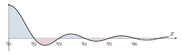
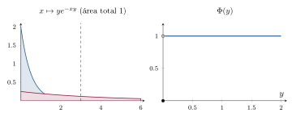
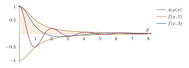
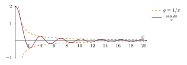

Parcial 2 · Convergencia uniforme e integrales paramétricas
Para arrancar∫0∞xsinxdx=2π es uno de los resultados más bellos del análisis, y sale metiendo un parámetro e−ax y derivando. Pero hay que justificar cada paso con convergencia uniforme.
Con g≡1 la demostración del Teorema 7.9 da otra prueba (sin derivadas) del Teorema 7.6.
Consideremos las integrales del tipo Φ(y)=∫abf(x,y)dx, donde −∞≤a<b≤+∞, con y∈Y, y la integral anterior es, para ciertos valores de y (o todo y), impropia.
Si ∀y0∈Y la integral Φ(y0)=∫abf(x,y0)dx converge, Φ(y) se llama convergente en Y.
Consideremos los casos en que:
−∞<a<b≤+∞;
∀y∈Y la función f(⋅,y)∈Rx[a,η] donde η es tal que a<η<b (es decir, la única singularidad está en b).
En este caso la convergencia de Φ(y) en Y significa que ∀y∈Y existe el límite η→b−0lim∫aηf(x,y)dx=∫abf(x,y)dx. Como ∫abf(x,y)dx−∫aηf(x,y)dx=∫ηbf(x,y)dx, por tanto, ∀y∈Y fijo, limη→b−0∫ηbf(x,y)dx=0. De este modo, si Φ(y) converge en Y, entonces ∀y∈Y fijo, ∀ε>0∃ηε=ηε(y)<b tal que ηε≤η<b implica ∫ηbf(x,y)dx<ε.
La integral ∫abf(x,y)dx, convergente en el conjunto Y, se llama convergente uniformemente en dicho conjunto si ∀ε>0∃ηε<b∀y∈Y∀η tal que ηε<η<b se verifica ∫ηbf(x,y)dx<ε. Aquí b puede ser finito o infinito.
Existe una relación entre las definiciones de convergencia y convergencia uniforme de una integral con las de series. Sea {ηn} una sucesión tal que η1=a,ηn∈[a,b),n=1,2,…,n→∞limηn=b. Consideremos la serie ∑k=1∞∫ηkηk+1f(x,y)dx, y sea Sn(y)=k=1∑n−1∫ηkηk+1f(x,y)dx=∫aηnf(x,y)dx su suma parcial.
Si Φ(y) converge (converge uniformemente) sobre el conjunto Y, será convergente (convergente uniformemente) sobre el conjunto Y la serie anterior, y ∫abf(x,y)dx=n→∞lim∫aηnf(x,y)dx=n→∞limSn(y). Es decir, la integral en consideración es igual a la suma de la serie.

Cada bloque de color es un término ∫ηkηk+1f(x,y)dx de la serie; la suma parcial Sn(y) es el área acumulada hasta ηn.
Demostraciónmostrar
Convergencia: para y fijo, Sn(y)=F(ηn) con F(η)=∫aηf(x,y)dx, y F(η)→Φ(y) cuando η→b−0; como ηn→b, ηn<b, por la caracterización secuencial del límite, Sn(y)→Φ(y).
Convergencia uniforme: sea ε>0 y ηε como en la Def 1. Como ηn→b, existe N tal que ηn>ηε para n≥N. Entonces, ∀y∈Y, n≥N, ∣Φ(y)−Sn(y)∣=∫ηnbf(x,y)dx<ε.
∫0∞senxdx diverge, pero con ηn=2π(n−1) la serie tiene todos sus términos nulos. Sí es cierto si la serie converge (uniformemente) para toda sucesión ηn→b, o si f≥0.
La definición de la convergencia uniforme puede parafrasearse así:
(Ejercicio de clase.) La Def 1 es equivalente a la Def 2.
Demostraciónmostrar
Pongamos ω(η)=supy∈Y∫ηbf(x,y)dx∈[0,+∞].
(Def 1 ⇒ Def 2) Sea ε>0 y ηε dado por la Def 1. Si ηε<η<b, entonces ∫ηbf(x,y)dx<ε para todo y∈Y, luego ω(η)≤ε. Esto dice que limη→b−0ω(η)=0.
(Def 2 ⇒ Def 1) Sea ε>0. Como ω(η)→0, existe ηε<b tal que ηε<η<b implica ω(η)<ε; luego, para todo y∈Y, ∫ηbf(x,y)dx≤ω(η)<ε, que es la Def 1.
Si consideramos la integral F(y,η):=∫ηbf(x,y)dx, llegamos a que esta integral tiende uniformemente sobre Y hacia cero para η→b−0 (el parámetro es η). La convergencia uniforme sobre Y de Φ(y) significa que en Y la función Φ(y,η):=∫aηf(x,y)dx tiende uniformemente, para η→b−0, a Φ(y); es decir, ∀ε>0∃ηε<b∀η, ηε≤η<b, ∀y∈Y se verifica ∣Φ(y)−Φ(y,η)∣<ε. En efecto, Φ(y)−Φ(y,η)=∫ηbf(x,y)dx, así ∫ηbf(x,y)dx<ε y Φ(y,η)⇉YΦ(y) para η→b−0.
Ejemplo 8.8· Convergencia no uniforme cerca de y=0
Φ(y)=∫0+∞ye−xydx, Y=[0,+∞).
Soluciónintenta primero
Es fácil ver que Φ(y) converge sobre Y: si y>0, ∫0ηye−xydx=1−e−ηy→1; si y=0 el integrando es nulo. Así Φ(y)={1,0,y>0,y=0. Para todo α>0 converge uniformemente en el intervalo [α,+∞), pues η→+∞limy≥αsup∫η+∞ye−xydx=η→∞limy≥αsupe−ηy=η→∞lime−ηα=0. Pero en [0,+∞) la convergencia no es uniforme, pues η→∞limy≥0sup∫η+∞ye−xydx=η→∞limy>0supe−ηy=1, ya que y↦e−ηy es estrictamente decreciente y tiende a 1 cuando y→0+. (Compara con el Teorema 8.17: el límite Φ es discontinuo en y=0.)

Para y pequeño (vino) casi toda el área está a la derecha de cualquier η fijo: la cola ∫η∞ye−xydx=e−ηy no se hace pequeña uniformemente en [0,∞); por eso Φ es discontinua en 0.
InteractivoLa cola de una integral paramétrica
Mueve y hacia 0: la cola más allá de η no se hace pequeña.
Si existe una función no negativa φ(x) definida en [a,b) e integrable según Riemann en todo segmento [a,η], donde a<η<b, de tal manera que
∣f(x,y)∣≤φ(x) donde a≤x<b, y∈Y;
la integral ∫abφ(x)dx converge;
entonces Φ(y)=∫abf(x,y)dx converge uniformemente sobre el conjunto Y.

Criterio de Weierstrass con f(x,y)=1+x2cosxy y mayorante φ(x)=1+x21: todas las colas ∫η∞ quedan controladas por la misma cola de φ.
Demostraciónmostrar
Por el criterio de comparación, Φ(y) converge absolutamente y por tanto converge simplemente ∀y∈Y. Como ∫abφ(x)dx es convergente, ∀ε>0∃ηε<b tal que ηε≤η<b implica ∫ηbφ(x)dx<ε. Entonces ∫ηbf(x,y)dx≤∫ηb∣f(x,y)∣dx≤∫ηbφ(x)dx<ε∀y∈Y, es decir, Φ(y) converge uniformemente sobre Y.
Para que Φ(y)=∫abf(x,y)dx converja uniformemente sobre el conjunto Y es necesario y suficiente que: ∀ε>0∃η<b∀η′,η′′ con η<η′<b, η<η′′<b, ∀y∈Y se verifique ∫η′η′′f(x,y)dx<ε.
Demostraciónmostrar
La convergencia uniforme de Φ(y) es equivalente a que Φ(y,η) tienda uniformemente al límite cuando η→b−0, y la desigualdad la podemos escribir como ∣Φ(y,η′′)−Φ(y,η′)∣<ε.
(Necesidad) Sea ε>0 y η tal que ∣Φ(y)−Φ(y,τ)∣<ε/2 para η<τ<b, y∈Y. Entonces ∣Φ(y,η′′)−Φ(y,η′)∣≤∣Φ(y,η′′)−Φ(y)∣+∣Φ(y)−Φ(y,η′)∣<ε. (Suficiencia) Para cada y fijo, la condición es el criterio de Cauchy para la existencia de limη→b−0Φ(y,η); luego Φ(y) converge en Y. Fijando η′∈(η,b) y haciendo η′′→b−0 en la desigualdad obtenemos ∣Φ(y)−Φ(y,η′)∣≤ε para todo y∈Y y todo η′∈(η,b), que es la convergencia uniforme.
Para los criterios tipo Dirichlet y Abel necesitamos el segundo teorema del valor medio.
Lema 8.11· Segundo teorema del valor medio (Bonnet–Weierstrass)
Sea f continua en [α,β] y g monótona en [α,β]. Entonces existe ξ∈[α,β] con ∫αβf(x)g(x)dx=g(α)∫αξf(x)dx+g(β)∫ξβf(x)dx.
Demostraciónmostrar
Caso g decreciente y g≥0. Sea F(x)=∫αxf, continua, con mínimo m y máximo M en [α,β]; ∥f∥∞=K. Para una partición α=x0<⋯<xn=β, por sumación por partes (como en el Lema 4.17) y F(x0)=0: i=1∑ng(xi−1)(F(xi)−F(xi−1))=i=1∑n−1F(xi)(g(xi−1)−g(xi))+F(xn)g(xn−1). Los coeficientes g(xi−1)−g(xi) y g(xn−1) son ≥0 y suman g(x0)=g(α); luego esta suma está entre mg(α) y Mg(α). Por otro lado, ∫αβfg−i=1∑ng(xi−1)∫xi−1xif≤i=1∑n∫xi−1xi∣f(x)∣∣g(x)−g(xi−1)∣dx≤Ki=1∑n(g(xi−1)−g(xi))Δxi, que tiende a 0 cuando la norma de la partición tiende a 0 (pues es ≤K∥P∥(g(α)−g(β))). Así mg(α)≤∫αβfg≤Mg(α) y, por el teorema del valor intermedio aplicado a F, existe ξ con ∫αβfg=g(α)F(ξ)=g(α)∫αξf.
Caso g decreciente. Aplicamos lo anterior a g−g(β)≥0: ∫αβfg=g(β)∫αβf+(g(α)−g(β))∫αξf=g(α)∫αξf+g(β)∫ξβf.Caso g creciente. Se aplica el caso anterior a −g y se multiplica por −1.
Teorema 8.12· Criterio de convergencia uniforme con derivada
Supongamos que las funciones f(x,y), g(x,y) están definidas para a≤x<+∞, y∈Y (a es finito, Y conjunto numérico), con la particularidad que f(x,y) es continua respecto a la variable x, mientras que g(x,y) tiene la derivada ∂x∂g continua respecto de x. Si
g(x,y) es monótona respecto de x∀y∈Y y en el conjunto Y tiende uniformemente hacia cero cuando x→∞;
∫aηf(x,y)dx está acotada como una función de las variables η∈[a,+∞), y∈Y, en el conjunto [a,+∞)×Y: ∫aηf(x,y)dx≤M;
entonces ∫a+∞g(x,y)f(x,y)dx converge uniformemente sobre Y.
Demostraciónmostrar
Sea H(x,y)=∫axf(t,y)dt; por (ii) ∣H∣≤M, y ∂x∂H=f (Teorema Fundamental del Cálculo). Para a≤η′<η′′, integrando por partes, ∫η′η′′gfdx=g(η′′,y)H(η′′,y)−g(η′,y)H(η′,y)−∫η′η′′∂x∂g(x,y)H(x,y)dx. Como g(⋅,y) es monótona, ∂x∂g no cambia de signo, luego ∫η′η′′∂x∂gdx=∣g(η′′,y)−g(η′,y)∣. Por tanto ∫η′η′′gfdx≤M(∣g(η′′,y)∣+∣g(η′,y)∣+∣g(η′′,y)−g(η′,y)∣)≤2M(∣g(η′′,y)∣+∣g(η′,y)∣). Sea ε>0. Por (i) existe η0 tal que x>η0 implica ∣g(x,y)∣<4Mε para todo y∈Y. Entonces para η0<η′<η′′ la integral es menor que ε en valor absoluto, uniformemente en y, y concluimos por el Teorema 8.10.
Si g, gx y h son continuas en [a,b)×S, entonces ∫abg(x,y)h(x,y)dx converge uniformemente sobre S si:
limx→b−{supy∈S∣g(x,y)∣}=0;
∃M tal que supy∈S∫axh(u,y)du<M, a≤x<b;
∫ab∣gx(x,y)∣dx converge uniformemente sobre S.
Demostraciónmostrar
Sea H(x,y)=∫axh(u,y)du, ∣H∣≤M. Como antes, integrando por partes para a≤η′<η′′<b: ∫η′η′′ghdx≤M(∣g(η′′,y)∣+∣g(η′,y)∣)+M∫η′η′′∣gx(x,y)∣dx. Sea ε>0. Por (i) existe η1<b con supS∣g(x,⋅)∣<ε para η1<x<b; por (iii) y el Teorema 8.10 existe η2<b con ∫η′η′′∣gx∣dx<ε para η2<η′<η′′<b, y∈S. Para max(η1,η2)<η′<η′′<b la integral es menor que 3Mε, uniformemente en y∈S; concluimos por el Teorema 8.10.
Una condición suficiente para la convergencia uniforme de la integral ∫abf(x,y)g(x,y)dx en el conjunto Y (con f(⋅,y) continua en [a,b)) es:
∃M tal que ∫aηf(x,y)dx<M∀η∈[a,b) y ∀y∈Y;
∀y∈Y, g(x,y) es monótona con respecto a x sobre [a,b), y g(x,y)⇉Y0 cuando x→b, x∈[a,b).

Criterio de Dirichlet: ∫1ηsen(xy)dx está acotada y 1/x↘0; las oscilaciones se cancelan aunque ∫∞xsenxydx=∞.
Demostraciónmostrar
Por (i), ∫uvf(x,y)dx=∫avf−∫auf<2M para a≤u<v<b. Sean a≤η′<η′′<b. Por el Lema 8.11 existe ξ∈[η′,η′′] con ∫η′η′′fgdx=g(η′,y)∫η′ξfdx+g(η′′,y)∫ξη′′fdx≤2M(∣g(η′,y)∣+∣g(η′′,y)∣). Dado ε>0, por (ii) existe η0<b con ∣g(x,y)∣<4Mε para η0<x<b y todo y. Así, para η0<η′<η′′<b, la integral es <ε uniformemente en Y, y se aplica el Teorema 8.10.
La integral impropia ∫a∞f(x,y)g(x,y)dx (con f(⋅,y) continua) converge uniformemente sobre Y si:
g es monótona en x para cada y∈Y y uniformemente acotada: ∣g(x,y)∣≤L;
∫a∞f(x,y)dx converge uniformemente sobre Y.
Demostraciónmostrar
Sea ε>0. Por (ii) y el Teorema 8.10 existe η0 tal que ∫uvf(x,y)dx<ε si η0<u<v, y∈Y. Para η0<η′<η′′, el Lema 8.11 da ξ∈[η′,η′′] con ∫η′η′′fgdx≤∣g(η′,y)∣∫η′ξf+∣g(η′′,y)∣∫ξη′′f<2Lε, y concluimos por el Teorema 8.10.
8.2 Propiedades de las integrales paramétricas impropias
Sea f(x,y) una función continua en [a,b)×I. Si la integral paramétrica impropia Φ(y)=∫abf(x,y)dx converge uniformemente en I, entonces Φ(y) es continua en I.
Demostraciónmostrar
Para cada η∈[a,b), la función Φ(y,η)=∫aηf(x,y)dx es continua en I (Teorema 7.3). Sea y0∈I y ε>0. Por convergencia uniforme existe η<b con ∣Φ(y)−Φ(y,η)∣<ε/3 para todo y∈I. Por continuidad de Φ(⋅,η) existe δ>0 tal que ∣y−y0∣<δ, y∈I, implica ∣Φ(y,η)−Φ(y0,η)∣<ε/3. Entonces ∣Φ(y)−Φ(y0)∣≤∣Φ(y)−Φ(y,η)∣+∣Φ(y,η)−Φ(y0,η)∣+∣Φ(y0,η)−Φ(y0)∣<ε.
Sean f(x,y) y ∂x∂f(x,y) definidas y continuas en I×[a,b). Si Φ(x)=∫abf(x,y)dy converge puntualmente en I y la integral paramétrica impropia ∫ab∂x∂f(x,y)dy converge uniformemente en I, entonces Φ(x) es diferenciable en I y Φ′(x)=∫ab∂x∂f(x,y)dy. Si además I es acotado, Φ(x) converge uniformemente en I.
Demostraciónmostrar
Sea G(x)=∫abfx(x,y)dy, continua en I por el Teorema 8.17. Sean Φη(x)=∫aηf(x,y)dy; por el Teorema 7.4, Φη′(t)=∫aηfx(t,y)dy, que es continua en t. Fijemos x0∈I. Para x∈I, por el Teorema Fundamental del Cálculo, Φη(x)−Φη(x0)=∫x0xΦη′(t)dt=∫x0x∫aηfx(t,y)dydt. Cuando η→b−0: el lado izquierdo tiende a Φ(x)−Φ(x0) (convergencia puntual), y como ∫aηfx(t,y)dy→G(t) uniformemente en t∈I, el lado derecho tiende a ∫x0xG(t)dt (pues ∫x0x(⋯−G)dt≤∣x−x0∣supt∣⋯−G∣). Luego Φ(x)=Φ(x0)+∫x0xG(t)dt,x∈I, y como G es continua, el Teorema Fundamental del Cálculo da Φ′(x)=G(x).
Si I es acotado, de longitud ∣I∣: para η<η′<b, ∫ηη′f(x,y)dy=∫ηη′f(x0,y)dy+∫x0x∫ηη′fx(t,y)dydt (Teorema 7.6 en el rectángulo compacto), y ambos términos son pequeños uniformemente en x (el primero por la convergencia de Φ(x0), el segundo ≤∣I∣supt∫ηη′fx por el Criterio de Cauchy para la integral de fx). El Teorema 8.10 da la convergencia uniforme de Φ.
Sea f(x,y) definida y continua en [a,b]×[c,d) y Φ(x)=∫cdf(x,y)dy uniformemente convergente en [a,b]. Entonces Φ(x) es integrable sobre [a,b] y ∫abΦ(x)dx=∫ab∫cdf(x,y)dydx=∫cd∫abf(x,y)dxdy.
Demostraciónmostrar
Φ es continua (Teorema 8.17), luego integrable. Sea Φη(x)=∫cηf(x,y)dy. Como Φη⇉Φ en [a,b] cuando η→d−0, ∫abΦdx−∫abΦηdx≤(b−a)[a,b]sup∣Φ−Φη∣→0. Por el Teorema 7.6 en [a,b]×[c,η], ∫abΦη(x)dx=∫cη∫abf(x,y)dxdy. Haciendo η→d−0, el lado izquierdo tiende a ∫abΦdx; luego el límite del lado derecho existe, es decir, la integral impropia ∫cd∫abfdxdy converge y vale ∫abΦdx.
Sea Df=X×Y, y0 punto de acumulación de Y, x0 punto de acumulación de X (pueden ser ±∞). Si f(x,y)⇉φ(x) si y→y0,x∈X;f(x,y)→ψ(y) si x→x0,y∈Y, entonces existen y son iguales x→x0limy→y0limf(x,y)yy→y0limx→x0limf(x,y).
f(x,y)y→y0uniforme en xφ(x)↓⏐x→x0↓⏐x→x0ψ(y)y→y0A
Esquema del Teorema: la flecha superior y la izquierda son hipótesis; la inferior y la derecha son la conclusión: ambos límites existen y llegan al mismo A.
Demostraciónmostrar
Sea ε>0 arbitrario y δ tal que ∣y1−y0∣<δ, ∣y2−y0∣<δ (y1,y2∈Y) implica ∣f(x,y1)−f(x,y2)∣≤ε∀x∈X (esto se sigue de la convergencia uniforme, con ε/2 y la desigualdad triangular). Pasando al límite x→x0, ∣ψ(y1)−ψ(y2)∣≤ε; por tanto se verifica el criterio de Cauchy y existe limy→y0ψ(y)=A, es decir, limy→y0limx→x0f(x,y)=A.
Ahora, elegimos δ además tal que ∣y−y0∣<δ implica ∣φ(x)−f(x,y)∣<ε∀x∈X y ∣ψ(y)−A∣<ε. Fijemos un tal y∈Y. Sea δ′ tal que ∣x−x0∣<δ′ implica ∣f(x,y)−ψ(y)∣<ε; entonces para todo x en ese entorno reducido de x0 en X, ∣φ(x)−A∣≤∣φ(x)−f(x,y)∣+∣f(x,y)−ψ(y)∣+∣ψ(y)−A∣<3ε. Entonces limx→x0φ(x)=A=limx→x0limy→y0f(x,y).
La demostración sólo usa nociones del tipo «para y suficientemente cerca de y0» y el criterio de Cauchy; por eso vale igual si y→y0 se reemplaza por n→∞, η→b−0, o cualquier baseBY de Y (en el sentido de Zorich: una familia no vacía de subconjuntos no vacíos de Y tal que la intersección de dos de ellos contiene un tercero). El Teorema 5.1 es un caso particular.
f(x,y) es tal que I(y)=∫a∞f(x,y)dx converge uniformemente sobre Y;
f(x,y)⇉φ(x) si y→y0 sobre [a,A], ∀A>a (con f(⋅,y) integrable en cada [a,A]);
entonces y→y0limI(y)=y→y0lim∫a∞f(x,y)dx=∫a∞y→y0limf(x,y)dx=∫a∞φ(x)dx.
Demostraciónmostrar
Sea F(A,y)=∫aAf(x,y)dx. Notemos que F(A,y)⇉I(y) si A→∞, y∈Y (hipótesis (a)). Además, por (b) y el Teorema 5.6 (en su versión para un parámetro continuo, que se prueba igual), φ es integrable en [a,A] y y→y0limF(A,y)=∫aAφ(x)dx,A>a. Por el Teorema 8.20 (con A en el papel de la variable con convergencia uniforme y y en el otro), tenemos: A→∞limy→y0limF(A,y)=A→∞lim∫aAφ(x)dx=∫a∞φ(x)dx=y→y0limA→∞limF(A,y)=y→y0lim∫a∞f(x,y)dx, donde ambos límites existen; en particular la integral impropia de φ converge.
Ahora, veamos condiciones suficientes para el intercambio de límites (de integración) en el caso de integral impropia. Ya vimos la posibilidad para la integral propia (Teoremas 7.6 y 8.19).
Teorema 8.23· Intercambio del orden de integración (3)
Sean X=[a,∞), Y=[c,∞) y f(x,y) continua en X×Y. Las integrales ∫a∞f(x,y)dx,∫c∞f(x,y)dy convergen uniformemente (la primera respecto de y en cada [c,C], la segunda respecto de x en cada [a,A]). Existe una (o ambas) integral ∫c∞dy∫a∞∣f(x,y)∣dx,∫a∞dx∫c∞∣f(x,y)∣dy. Entonces existen y son iguales ∫c∞dy∫a∞f(x,y)dxy∫a∞dx∫c∞f(x,y)dy.
Demostraciónmostrar
Supongamos que ∫a∞dx∫c∞∣f(x,y)∣dy existe; esto lo entendemos como: Ψ(x):=∫c∞∣f(x,y)∣dy converge para cada x, Ψ es integrable en cada [a,A] y ∫a∞Ψ(x)dx<∞. (El otro caso es simétrico.)
Para todo C>c tenemos ∫cCdy∫a∞f(x,y)dx=∫a∞dx∫cCf(x,y)dy por el teorema de intercambio en el sentido propio-impropio (Teorema 8.19, con los papeles de x e y intercambiados: ∫a∞f(x,y)dx converge uniformemente para y∈[c,C]). Tomemos límites en ambos lados cuando C→∞. En el lado izquierdo, si el límite existe, es por definición ∫c∞dy∫a∞fdx, que es lo que queremos. Basta entonces probar que C→∞lim∫a∞dx∫cCf(x,y)dy=∫a∞dx∫c∞f(x,y)dy. Definamos la función ϕ(x,C)=∫cCf(x,y)dy, continua en x∈X (Teorema 7.3). Probemos que ∫a∞ϕ(x,C)dx→∫a∞dx∫c∞f(x,y)dy si C→∞. Tenemos ∣ϕ(x,C)∣=∫cCf(x,y)dy≤∫cC∣f(x,y)∣dy≤∫c∞∣f(x,y)∣dy=Ψ(x). Además ∫a∞Ψ(x)dx converge por hipótesis. Así, por el Teorema de Weierstrass (Teorema 8.9, con parámetro C), ∫a∞ϕ(x,C)dx converge uniformemente respecto de C∈[c,∞). Y si C→∞, ϕ(x,C)⇉∫c∞f(x,y)dy sobre cada [a,A] (convergencia uniforme de la segunda integral). Por el Teorema 8.22 (con C en el papel de y y y0=∞), ∫a∞ϕ(x,C)dx⟶∫a∞dx∫c∞f(x,y)dy. Así, limC→∞∫cCdy∫a∞f(x,y)dx=∫a∞dx∫c∞f(x,y)dy, es decir, ambas integrales iteradas existen y son iguales.
Sea f(x,y) una familia de funciones dependientes de un parámetro y∈Y que son integrables, posiblemente en el sentido impropio, sobre el intervalo a≤x<ω, y sea BY una base en Y. Si
∀b∈[a,ω), f(x,y)⇉φ(x) sobre [a,b] sobre la base BY;
la integral ∫aωf(x,y)dx converge uniformemente en Y;
entonces la función límite φ es impropiamente integrable sobre [a,ω) y se cumple la igualdad BYlim∫aωf(x,y)dx=∫aωφ(x)dx.
Demostraciónmostrar
La prueba se reduce a analizar el siguiente diagrama: Fb(y):=∫abf(x,y)dxb→ωb∈[a,ω)∫aωf(x,y)dx=F(y)↓⏐BY↓⏐BY∫abφ(x)dxb→ω∫aωφ(x)dx (la flecha superior indica convergencia uniforme en Y).
Flecha izquierda. Por (a), para cada b fijo, f(⋅,y)⇉φ en [a,b] sobre BY. Como cada f(⋅,y) es integrable en [a,b], el límite uniforme φ es integrable en [a,b] (mismo argumento que en el Teorema 5.6, con α(x)=x), y Fb(y)−∫abφ≤(b−a)x∈[a,b]sup∣f(x,y)−φ(x)∣BY0.Flecha superior. Por (b), Fb(y)⇉F(y) en Y cuando b→ω, b∈[a,ω).
Aplicamos ahora el Teorema 8.20 (en su versión con bases, ver la Observación 8.21) a la función Fb(y) de las dos variables b∈[a,ω), y∈Y: la convergencia en b es uniforme en y y para cada b existe el límite sobre BY. Concluimos que existen y son iguales limb→ω∫abφ(x)dx y limBYF(y), es decir, la flecha inferior y la flecha derecha del diagrama existen y llegan al mismo valor: φ es impropiamente integrable en [a,ω) y limBY∫aωf(x,y)dx=∫aωφ(x)dx.